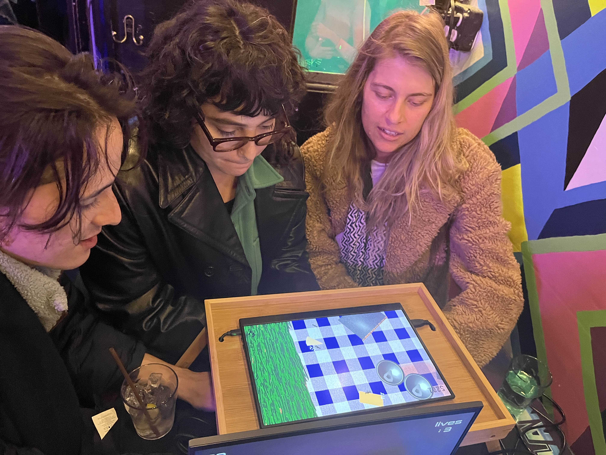
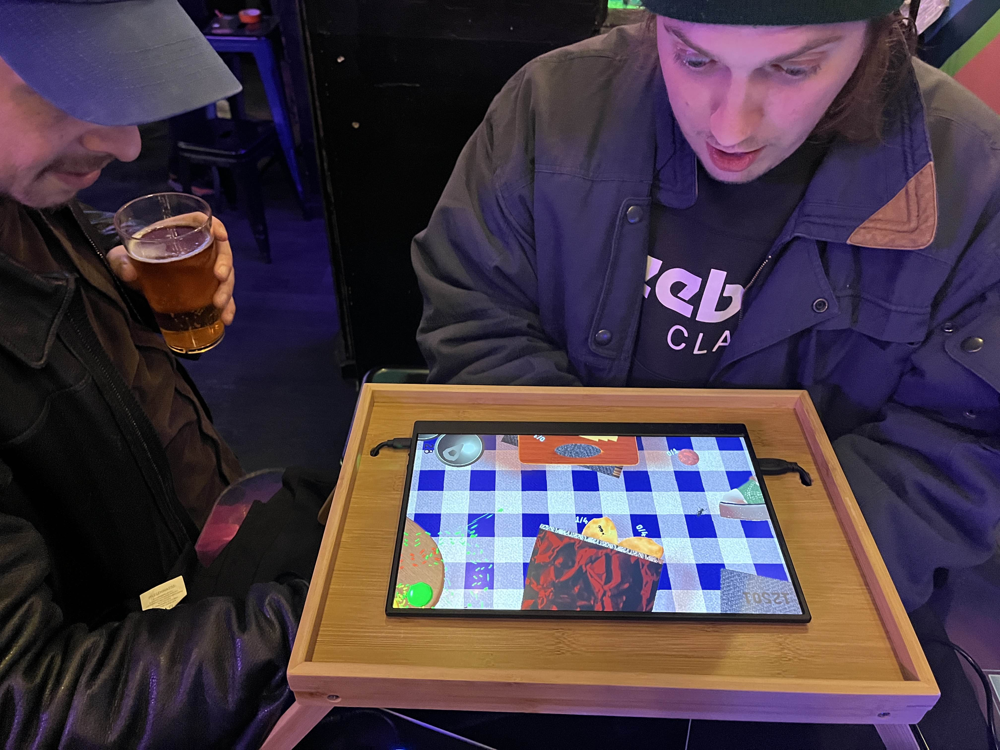
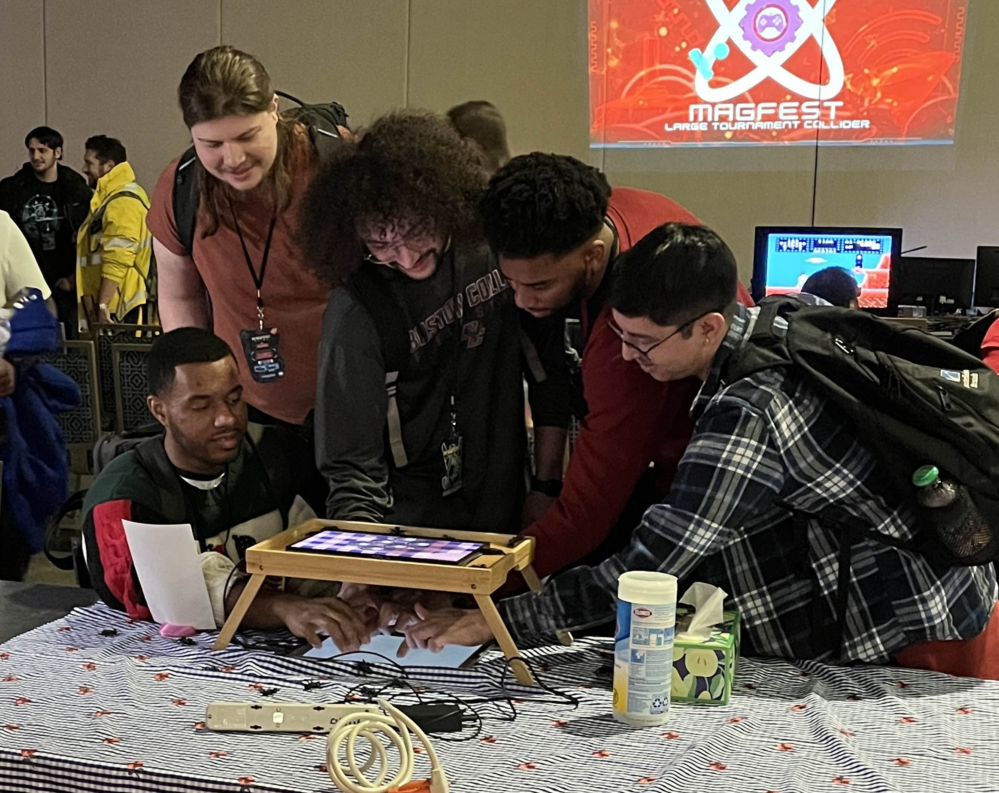
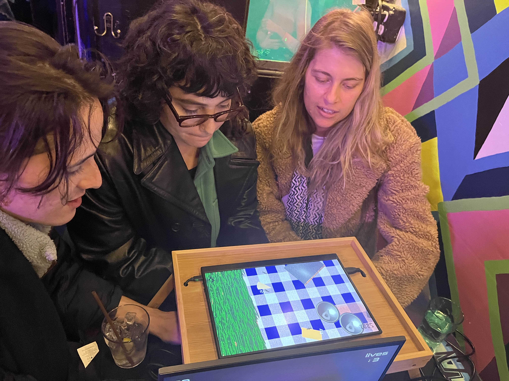
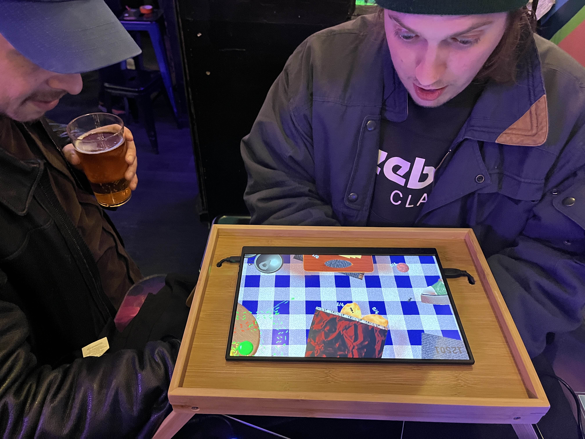
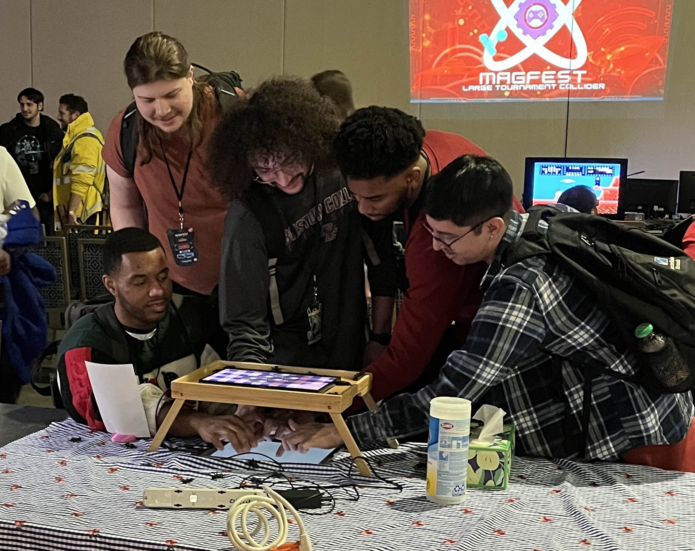

We are all ants is a game for 2 to 10 fingers, and however many players that involves. Made using touch input and a custom physical installation, players look down on a screen where each of their fingers turns into a procedurally animated ant. Work together to move things around!.
Year: 2023
Medium: Touch Screen, External Display

 




